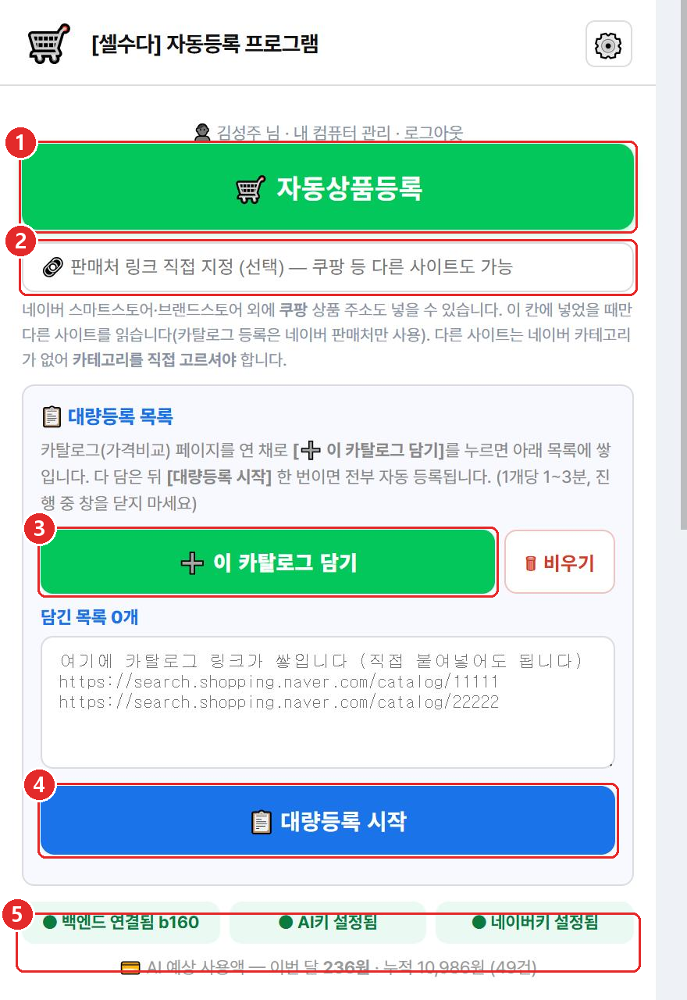
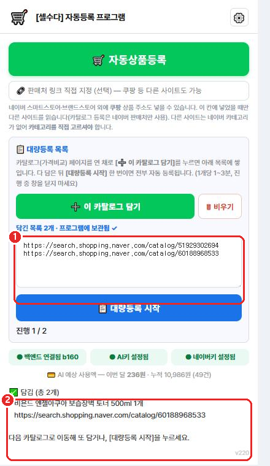
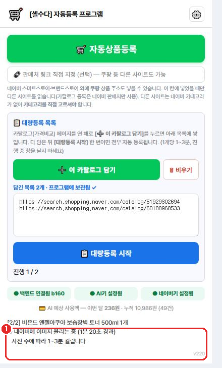
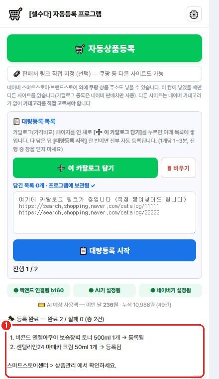
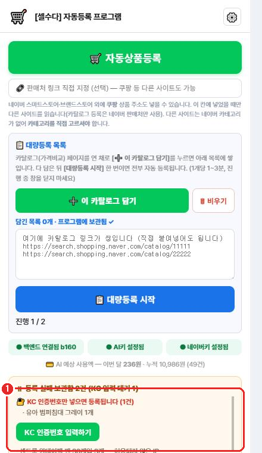
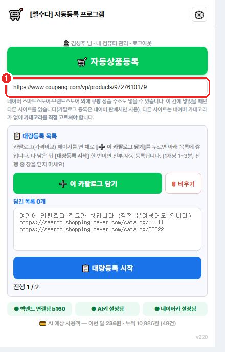

이 설명서는 프로그램을 이미 설치한 분이
매일 상품을 올릴 때 보는 설명서입니다.
처음 설치와 키 입력은 [셀수다] 자동등록 설치 안내를 먼저 보세요.
1. 프로그램 열기
1
크롬을 엽니다. (바탕화면의 동그란 크롬 아이콘)
2
크롬 오른쪽 위에 있는 🧩 퍼즐 모양 을 누릅니다.
3
목록에서 🛒 [셀수다] 자동등록 프로그램 을 누릅니다.
매번 찾기 번거로우시면 — 퍼즐 모양을 누른 뒤 프로그램 이름 옆의
압정(📌)을 한 번 눌러 두세요. 그러면 크롬 오른쪽 위에
🛒 그림이 항상 보여서 바로 누를 수 있습니다.
프로그램 창은 따로 뜨는 작은 창입니다.
등록이 끝날 때까지 이 창을 닫지 마세요.
2. 화면 둘러보기 — 어디를 누르나요

프로그램을 열면 이런 화면이 나옵니다
| ① 자동상품등록 | 지금 보고 있는 상품 한 개를 바로 올립니다. |
|---|
| ② 판매처 링크 직접 지정 | 쿠팡처럼 다른 사이트 상품을 올릴 때 주소를 넣는 칸입니다. (8번 참고) |
|---|
| ③ 이 카탈로그 담기 | 상품을 목록에 담아 둡니다. 여러 개를 모아서 한 번에 올릴 때 씁니다. |
|---|
| ④ 대량등록 시작 | 담아 둔 상품을 전부 자동으로 올립니다. |
|---|
| ⑤ 아래쪽 초록 글씨 3개 | 준비가 다 됐다는 표시입니다. 세 개 모두 초록색이어야 등록이 됩니다. |
|---|
⑤가 빨간색이면 등록이 안 됩니다.
· 백엔드 연결 안 됨 → 9번 문제 해결을 보세요.
· AI키 필요 / 네이버키 필요 → 설치 안내를 보고 키를 넣어 주세요.
3. 상품 담기
1
크롬에서 네이버 쇼핑에 들어가 올리고 싶은 상품을 찾습니다.
2
가격비교 페이지를 엽니다.
주소창이 search.shopping.naver.com/catalog/… 로 시작하면 맞습니다.
3
그 화면을 켜 둔 채로 프로그램을 열고 ➕ 이 카탈로그 담기 를 누릅니다.

담기면 이렇게 나옵니다
| ① 담긴 목록 | 담은 상품 주소가 쌓입니다. 담긴 목록 2개 처럼 개수가 보입니다. |
|---|
| ② 담긴 상품 이름 | 무엇이 담겼는지 상품 이름이 나옵니다. 엉뚱한 상품이면 바로 아실 수 있습니다. |
|---|
여러 개를 담으세요. 다음 상품 페이지로 이동해서 또 담기를 누르면 계속 쌓입니다.
한 번에 20~30개가 적당합니다. 너무 많이 담으면 네이버가 잠시 막습니다.
가격비교 페이지가 아니면 담기지 않습니다.
"지금 보고 있는 페이지는 가격비교 페이지가 아닙니다" 라고 나오면,
가격비교 페이지를 연 다음에 다시 눌러 주세요.
4. 등록 시작하기
1
다 담으셨으면 📋 대량등록 시작 을 누릅니다.
2
기다립니다. 상품 하나에 1~3분 걸립니다.
20개면 30분~1시간 정도 걸립니다.

진행 중에는 지금 무엇을 하는 중인지 보여 줍니다
진행 중에 하지 마세요
· 프로그램 창을 닫지 마세요
· 크롬을 끄지 마세요
· 컴퓨터를 끄거나 잠자기로 두지 마세요
중간에 끊기면 AI 비용이 다시 들 수 있습니다.
기다리는 동안 다른 일을 하셔도 됩니다. 창만 닫지 않으면 됩니다.
화면이 멈춘 것처럼 보여도 시간(경과)이 올라가고 있으면 정상입니다.
5. 끝났는지 확인하기

다 끝나면 결과를 알려 줍니다
- 완료 2 / 실패 0 — 두 개 다 올라갔다는 뜻입니다.
- 담긴 목록은 자동으로 비워집니다. (올라간 상품은 빠집니다)
- 실제 상품은 스마트스토어센터 → 상품관리 에서 보입니다.
판매중지로 올라가는 상품이 있습니다.
상세정보나 고시정보가 부족한 상품은 일부러 판매중지로 올립니다.
내용을 채운 뒤 스마트스토어센터에서 판매중으로 바꿔 주세요.
6. 중간에 물어보는 것들
등록이 다 끝난 뒤, 프로그램이 두 가지를 물어볼 수 있습니다.
(등록 중간에는 묻지 않으니 자리를 비우셔도 됩니다)
① 카테고리를 골라 주세요
프로그램이 카테고리를 못 찾은 상품입니다. 창이 뜨면 낱말로 찾아 고르시면 됩니다.
- 예) 바디워시, 잡곡, 핸드크림 처럼 짧게 넣고 찾기
- 찾는 것이 없으면 번호나 전체 경로를 직접 넣을 수도 있습니다
- 비워 두고 넘기면 그 상품만 등록되지 않습니다 (AI 비용은 들지 않습니다)
② KC 인증번호를 넣어 주세요
전자제품·유아용품처럼 인증번호가 꼭 필요한 상품입니다.
- 제품 포장이나 상세페이지에 적힌 인증번호를 넣어 주세요
- 모르면 공급처에 문의하시고, 그 전까지는 비워 두셔도 됩니다
- 비워 둬도 보관함에 남아 있어서, 나중에 번호만 넣으면 바로 등록됩니다
인증번호는 지어내면 안 됩니다. KC·어린이제품·생활화학 인증은 법으로 정해진 의무라,
잘못 넣으면 판매자가 책임을 집니다. 확실하지 않으면 비워 두세요.
7. 실패한 상품 다시 올리기

실패한 상품은 보관함에 남습니다
등록이 실패해도 AI가 만든 사진과 상세내용은 보관됩니다.
문제를 고친 뒤 [▶ 이어서 등록] 을 누르면
AI 비용 없이 다시 올립니다.
| KC 인증번호만 넣으면 등록됩니다 |
[KC 인증번호 입력하기] 를 누르고 번호를 넣어 주세요. |
|---|
| 허용되지 않은 IP |
인터넷 주소가 바뀐 것입니다. 9번 문제 해결을 보세요. |
|---|
| 등록권한이 있어야 판매 가능 |
건강기능식품 등은 스마트스토어센터에서 판매권한 신청을 먼저 하셔야 합니다. |
|---|
보관함은 프로그램을 껐다 켜도 남아 있습니다. 급하지 않으면 나중에 하셔도 됩니다.
8. 쿠팡 상품 올리기

쿠팡 상품 주소를 이 칸에 넣습니다
1
쿠팡에서 상품 페이지를 열고 주소창의 주소를 복사합니다.
2
프로그램의 판매처 링크 직접 지정 칸에 붙여넣기 합니다.
쿠팡 상품은 카테고리를 직접 고르셔야 합니다.
쿠팡 카테고리와 네이버 카테고리가 다르기 때문입니다.
또 고른 옵션 하나로만 등록됩니다.
가격은 쿠팡에서 실제 판매되는 가격을 읽어옵니다.
품절이거나 가격이 안 보이면 등록하지 않고 알려 드립니다.
9. 이럴 땐 이렇게 — 문제 해결
Q. 아래쪽에 "백엔드 연결 안 됨" 이라고 빨갛게 나와요
프로그램의 엔진이 꺼진 것입니다. 이렇게 켜 주세요.
- 바탕화면에서 내 PC → C 드라이브(로컬 디스크 C:) 를 엽니다
- 셀수다자동등록 폴더 → 백엔드 폴더를 엽니다
- 설치(최초 한번) 파일을 두 번 클릭합니다
- 검은 창이 뜨면 끄지 말고 그대로 두세요
- 프로그램 창을 닫았다 다시 열면 초록색으로 바뀝니다
Q. "허용되지 않은 IP" 라고 나와요
인터넷 주소가 바뀌면 네이버가 막습니다. 프로그램 화면에 지금 내 IP가 나옵니다.
- 네이버 커머스API센터 에 접속합니다
- 애플리케이션 관리 에서 화면에 나온 IP를 추가합니다
- 10분쯤 뒤에 다시 시도합니다
Q. "AI 크레딧을 다 썼습니다" 라고 나와요
AI 사용료가 떨어진 것입니다. aistudio.google.com → 왼쪽 아래 Billing(결제)
에서 충전하시면 됩니다. 충전 후 몇 분 뒤에 다시 하세요.
Q. "네이버가 쇼핑 접속을 일시적으로 막았습니다" 라고 나와요
한 번에 너무 많이 하면 네이버가 잠시 막습니다. 프로그램 잘못이 아닙니다.
- 30분쯤 쉬었다가 다시 [대량등록 시작] 을 누르세요
- 담아둔 목록은 그대로 남아 있습니다
- 다음부터는 20~30개씩 나눠서 해 주세요
Q. 몇 분째 화면이 그대로예요
상품 하나에 1~3분 걸립니다. 화면의 경과 시간이 올라가고 있으면 정상입니다.
15분이 넘으면 프로그램이 알아서 멈추고 무엇을 해야 할지 알려 드립니다.
Q. 등록한 상품이 판매중지로 되어 있어요
상세내용이나 고시정보가 부족하면 일부러 판매중지로 올립니다.
그대로 팔면 손님이 정보를 못 보기 때문입니다.
스마트스토어센터에서 내용을 채운 뒤 판매중으로 바꿔 주세요.
Q. 프로그램이 업데이트됐다고 나와요
구글드라이브에서 새 설치파일을 받아 실행하시면 됩니다.
키와 로그인은 그대로 유지되니 다시 넣지 않으셔도 됩니다.
🙋 그래도 안 되면
화면에 나온 글씨를 그대로 사진 찍어 보내 주세요.
어느 단계에서 멈췄는지 화면에 나오기 때문에, 그 사진만 있으면 원인을 찾을 수 있습니다.